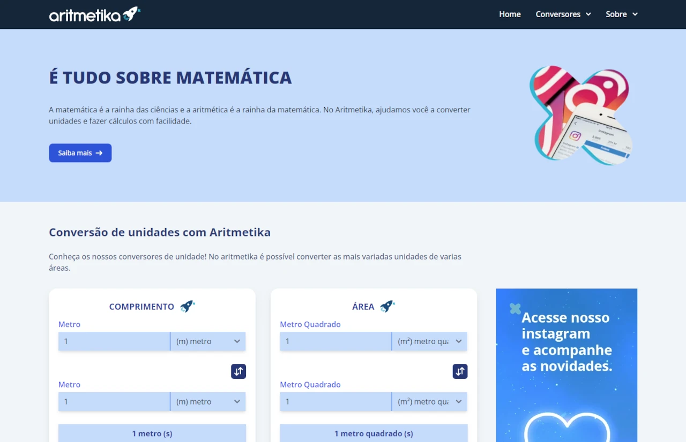

Aritmetika
Site de conversão de unidades criado com Laravel, TypeScript e TailwindCSS
Site de conversão de unidades criado com Laravel, TypeScript e TailwindCSS
Blog construído com backend em Spring Boot e frontend em Angular
RepositórioEditor WYSIWYG construído com React e DraftJS
RepositórioAPI de Reajuste Salarial construída com Spring Boot
API da Rinha de Backend 2024 com controle de transações construída em Java com o Eclipse Vert.x